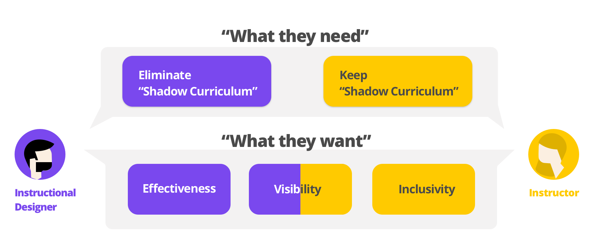

Our Solution
— Problem Reframing —
Behind the conflicting attitudes about "Shadow Curriculum", we wanted to dig into the problem and looked for deeper demands of Instructors and Instructional Designers. Through the research, we reframed the problem from “What they need” to “What they want”. we found out: Instructors were seeking for the sense of inclusivity from making supplemental contents for the course they were teaching. Instructional Designers valued effectiveness so they rejected all kinds of "Shadow Curriculum" which were not available for evaluation. Lack of visibility proved to be the main reason for "Shadow Curriculum" and both sides asked for more visibility for better communication and collaboration.
— Introducing LOOP —
Contributing meaningfully by creating formative assessment

Encouraging collaboration through feedback loop
- Building a public dashboard for Instructors in the same course and making everything ready to share.
- Giving and receiving information-rich feedback for better communication and collaboration.

Centralize everything and make it visiable
- Storing quizzes in a centralized bank accessible for all departments to observe and evaluate.
- Finding something pre-made by editing any quizzes and making it right for struggling students.
Track performance data to validate effectiveness
- Tracking BKT, AFM and iAFM data to evaluate content efficiency and measure learning achievement at the back-end.
- Analyzing or freezing quizzes with problematic data at the front-end.

— What's the Outcome —
COORDINATION
Loop coordinates the conflict between Instructional Designers and Instructors by shifting Instructors’ focus from instruction creation to formative assessment creation.
VISIBILITY
Loop solves the “Shadow Curriculum” problem by centralizing the content sharing platform to offer visibility for Instructors and Instructional Designers.
INCLUSIVITY
Loop facilitates collaboration and helps Instructors feel a sustained sense of ownership of instruction alongside Instructional Designers.
EFFECTIVENESS
Loop captures learning data and helps all departments gain a better understanding of the effectiveness of course materials.